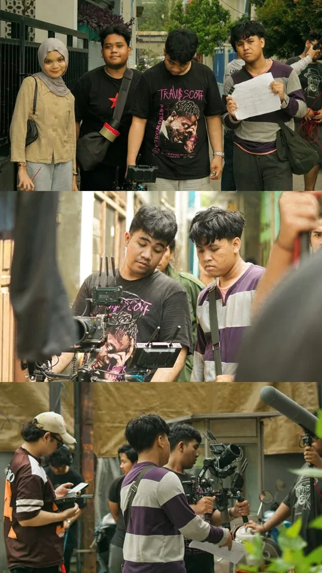

Teaser Presimposium
A cinematic announcement cut for social — built around rhythm, tension, and a clear call to action.
I turn raw footage into stories that hold attention, then design the visuals that carry them. Five years across brand content, campaigns, and live events.
01 About
Jakarta, Indonesia

I'm Shatya, a creative digital marketing professional working between the edit bay and the design canvas.
For the past five years I've built content for dental brands, marketplace sellers, event teams, and community media — from daily social video to print collateral and full campaign systems.
My work starts with the story: what needs to be said, who needs to feel it, and where it will live. Then I cut, design, and deliver it.
02 Video editing & motion
Selected cuts · 2022—2026
Short-form recaps, cinematic teasers, AI-assisted promos, and on-set support. Every cut is built for the platform it lives on.
A cinematic announcement cut for social — built around rhythm, tension, and a clear call to action.
Short-form / vertical · Recap
Drag · arrows · 03 cuts
Event recap · 9:16
Event recap · 9:16
Event recap · 9:16
Short-form / vertical · AI promo
Drag · arrows · 03 cuts
AI-assisted promo · 9:16
AI-assisted promo · 9:16
AI-assisted promo · 9:16
Cinematic / on-set
02 selections
Teaser trailer · 16:9

Camera & production · 2022 · YouTube ↗
03 Graphic design
Campaigns · print · social
Marketplace campaigns, print collateral, event identities, and social systems — built to stay consistent across every touchpoint.
Promotional visuals for Shopee, Lazada, TikTok Shop, Tokopedia, and live-shopping moments — keeping one brand system readable at thumbnail size.
Brochures, cards, catalog spreads, and roll-up banners — balancing professional dental information with a consistent visual voice.
Creative concepts, promotional strategy, booth visuals, photography, videography, and interview coverage for a major implant dentistry symposium.
A faster inquiry flow connecting comments and direct messages to personalized replies and the official WhatsApp channel.
04 Editorial & catalog
12 pages · A4
A digital implant catalog designed for clarity, consistency, and easy browsing — in print and on screen.
12 pages · A4 · Print and editorial · 2026
Use the Previous and Next buttons to turn pages. For the complete catalog, use Download PDF.
05 Instagram results
@mkg_indonesia · 60 days
Instagram Insights for MKG INDONESIA, 20 Sep–19 Nov 2026. A short look at what moved — the full IPK breakdown lives on the performance page.
Content Performance Index — Reels 87.9 · Posts 74.6 · Stories 27.3
See the full report06 Experience & tools
2019 — present
Creative work built through campaigns, production days, live events, community teams, and continuous learning.
PT. MKG Indonesia
Daily Instagram and TikTok strategy, educational and promotional dental content, monthly campaign planning, Meta Ads selection, event support, publishing, and video delivery.
PT. Sumber Mulia Group (SMG)
Marketplace and live-shopping visuals across Shopee, Lazada, TikTok Shop, and Tokopedia, supporting a consistent HammerHead brand presence.
Binar Group
Visual content from concept to execution, video advertising, marketing materials, event documentation, and promotional content tailored to campaign audiences.
Credentials
Formal training in multimedia production, visual design, and end-to-end creative delivery.
07 Contact
Jakarta, Indonesia
Have a project, campaign, or story to shape?